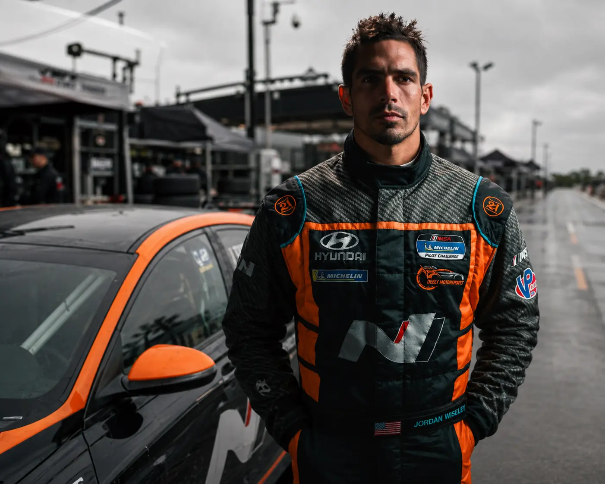
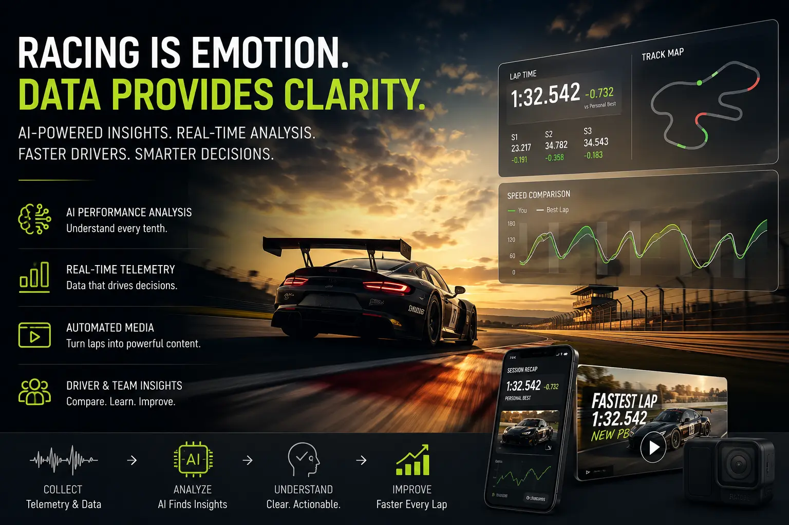
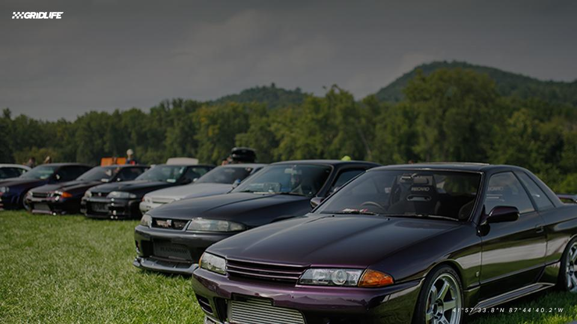

01INQUIRIES OPEN
Race programs
Competition support, driver preparation, event execution, and an arrive-and-drive program shaped around real goals—not generic seat time.

COMPETITION × INTELLIGENCE × MEDIA
SoCal N Motorsports connects real-world competition with an edge-first racing intelligence platform—creating faster learning and greater value on and off track.
We combine decades of automotive racing and live-media experience with a practical belief: the next advantage comes from understanding every lap, preserving every lesson, and turning the evidence into action.
Competition support, driver preparation, event execution, and an arrive-and-drive program shaped around real goals—not generic seat time.
An edge-first intelligence layer built to connect telemetry, onboard and broadcast video, vehicle data, and accumulated team knowledge.
Race media, technical storytelling, sponsor activation, and repeatable insight designed to create value well beyond a weekend at the track.

ON TRACK
Our arrive-and-drive programs combine the car, crew, preparation, coaching, and event support needed to turn up ready to perform. Programs are shaped around each driver's objectives for Zenith and GRIDLIFE competition.

DRIVER DEVELOPMENT
Driver Coach · SoCal N Motorsports
Jordan brings championship-level competitive discipline and touring-car experience to every coaching session. He helps drivers prepare before the event, build speed methodically, understand video and data, sharpen racecraft, and turn feedback into repeatable execution.
His coaching is integrated into SoCal N Motorsports arrive-and-drive programs, including Zenith and GRIDLIFE events, with support available for competition weekends, practice days, and hill climbs.
THE PLATFORM
We are building a persistent, local-first intelligence layer that learns from real telemetry and media while keeping the team's knowledge close to the track.

Telemetry, video, timing, vehicle data, and race media.
Connect the driver, car, lap, corner, event, and evidence.
Turn raw signals into clear coaching, engineering, and media insight.
Make the next decision faster—and preserve what the team learns.
Current stage: working engineering prototype progressing toward a demonstration-grade MVP using real race telemetry and video.

BUILD WITH US
We are opening conversations with brands, technology partners, race organizers, and beta drivers who want to help shape a smarter racing ecosystem.
Authentic racing visibility, technical storytelling, reusable media, and a platform designed to measure more of the value created.
Collaborate across telemetry, connectivity, media, AI, data infrastructure, and trackside deployment.
Bring real telemetry and onboard video into beta workflows for coaching, comparison, and product development.
01 Race program interest
02 Racing intelligence beta
03 Sponsor and technology partnerships
START HERE
Racing, arrive-and-drive, driver coaching, technology, or sponsorship—tell us where you want to go and we'll identify the most useful next step.